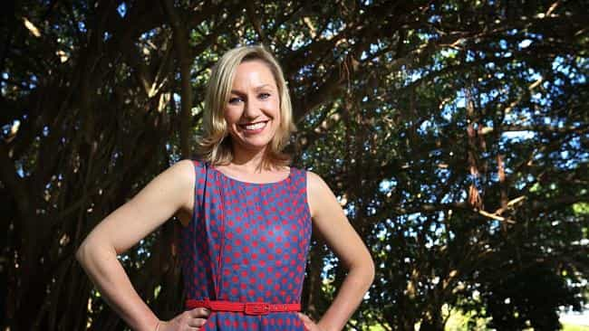

< < < Back
Feminist Politician Declares War On “Gendered Toys”; Dresses Up Daughter As Pink Fairy Princess – Return Of Kings
Senator Waters said that “outdated stereotypes” about girls and boys perpetuate gender inequality, “which feeds into very serious problems such as domestic violence and the gender pay gap”.
– The Sydney Morning Herald quoting Senator Larissa Waters of Queensland, from the far-left Australian Greens, after her call to restrict the giving of “gendered” presents, such as action figures to boys and Barbies to girls.
A national feminist politician has remained quiet about her push for the end of children’s gendered toys, especially when given at holidays such as Christmas. Larissa Waters made headlines at the end of 2014 for arguing that gendered toys were a catalyst for issues such as domestic violence and the gender pay gap.
Lo and behold, a photo surfaced of her own daughter dressed as a pink fairy princess at her birthday party. Waters, who hails from a political party which never talks about balancing budgets or bread-and-butter economics, desperately deflected accusations that she was a hypocrite.
The name Larissa Waters won’t ring a bell for many of you, but her flagrant double standards will. They are ones you could put in the mouths of hundreds, if not thousands of feminists and other SJWs quoted in the media.
When I heard about her moronic campaign at the end of year, I wanted to wait and see if it continued. After six months it hasn’t, although Waters’ radical ideology has come out in different ways, such as calling innocent or run-of-the-mill criticism of female politicians “sexist” or “misogynist.”
After the bizarre picture of her daughter’s dressing-up went public, Waters defiantly said she still wanted a ban on gendered toys. The sting from the many rebukes she faced over her proposal means we should expect for it to be called for again in a year or so.
We already treat boys and girls (and men and women) differently
Larissa Waters’ young daughter. The Senator’s hypocrisy knows no bounds, tragically. By her rationale, she’s exposing her daughter to the risk of future domestic violence and the gender pay gap, right?
Society has no issue whatsoever with declaring boys as different and “hyperactive,” to the point where these differences are discouraged and far too many boys are effectively overdosed with Ritalin and other behavioral control drugs. Studies also consistently prove that both parents treat boys and girls differently, especially in terms of telling boys to “man up” and “stop crying” and mollycoddling girls more when they become emotional.
It’s therefore strange that these are not issues taken up by Senator Waters and her colleagues. One’s style of parenting imprints much more on a child than whichever Hasbro, Mattel or another company’s product they are given for a Christmas, birthday, or an excellent report card.
As boys and girls get older, the way they are treated actually becomes starker, not more similar. Girls are taught that they need many female role models, which they already get from the ranks of the overwhelmingly female elementary school teacher profession, whilst their male classmates generally get no such guidance from older men in education.
Boys who break the law quickly learn that there is one set of rules for them, and another for girls. The notion that females are treated more leniently by ironically paternalistic members of the judiciary and law enforcement is not new. Sonja Starr, a US academic I have cited several times, noted that men receive 60% longer sentences for federal offences and many women avoid prosecution or jail entirely.
Because of “chivalrous” expectations that men should never hit or otherwise harm women, especially publicly, male homicide victims outnumber female ones by 3:1 or 4:1. The list is endless.
Larissa Waters appropriates every female “stereotype” in the book

An interesting part of Larissa Waters’ entry into politics (and a double standard) has been her steady appropriation of the female “stereotypes” of using cosmetics and traditionally feminine fashion all the time.
Politicians, male and female, go to some effort to present themselves well. Appearing on television, they use make-up a lot of the time. Unlike for women, though, the men use it to iron out only the worst aspects of their visages, the sort of jowls, five o’clock shadows and other “oddities” which made Richard Nixon lose the 1960 Presidential debate (and the subsequent election) against John F. Kennedy.
The differences between Larissa Waters’ best and worst appearances are down to her using make-up. Particularly in the hot and humid climate of her native state of Queensland, her campaign and other appearances show a decidedly different face. Therefore, how is this not a stereotype? Why is she succumbing to what feminists like her call the constant, mental illness-producing demands on women to look perfect and non-real?
It goes further, too. Of any female politician I have seen over the last five years in the Australian Federal Parliament, Senator Waters is the one who seems to adore conventionally feminine fashion the most. Polka dots, flowers, and other girly-girl prints are invariably emblazoned across her dresses, blouses and skirts.
I can sometimes appreciate her choices in and of themselves, but they are far removed from the sort of gender-neutral image she demands people foist on their children.
End the hypocrisy, please

There are dozens of readily accessible photos of Larissa Waters wearing stereotypically flowery and ornate dresses, skirts and other items. So why isn’t she following No Gender December herself?
The slap-down of Senator Waters’ brain-dead comments is heartening. But we cannot celebrate prematurely. There are sufficient numbers of SJWs lacking enough shame that they try and bury the rest of us with their self-serving ultimatums and social reengineering projects. We are unable to always count on non-red pill folks to put these do-gooders in their place.
The advantage that SJWs have had is their ability to refocus a debate and blur out the surrounding context that disproves them. It is our responsibility to revert back to the full picture. Exposing hypocrisy may not seem to work in the short run, but it reaps large dividends in the longer term (just look at Gamergate).
What’s more, as her daughter’s birthday party and her manner of personal presentation prove, Larissa Waters doesn’t even believe in being gender-neutral herself. If the SJWs don’t even want to keep themselves consistent for their cherished pet projects, how good can these initiatives possibly be for society at large?
Read More: Spanish Politician Is Crushed For Questioning Feminist Dogma